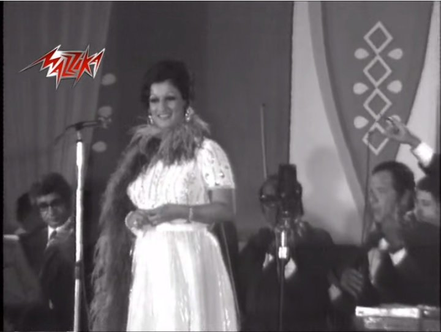
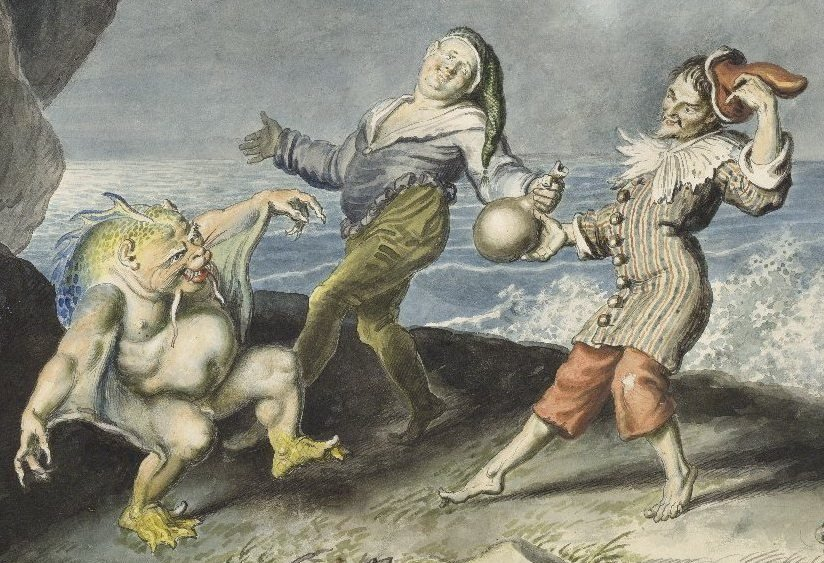
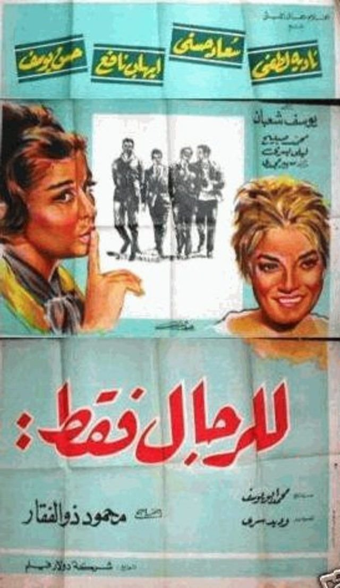
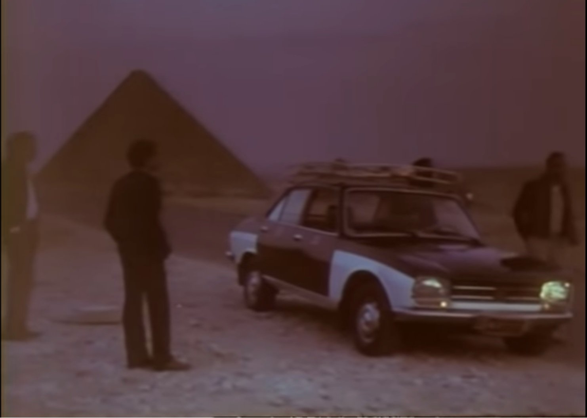
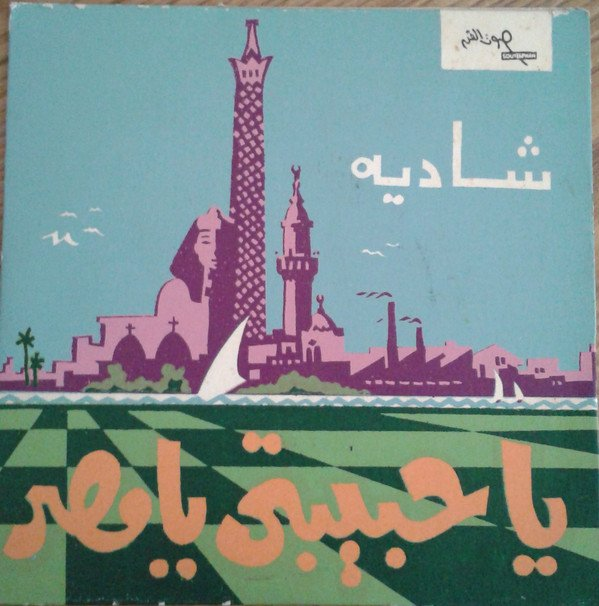
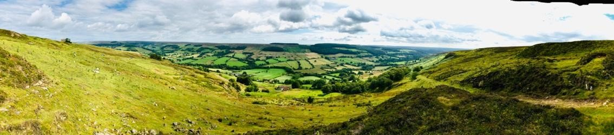
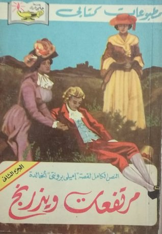

Grassington Highland in the Yorkshire Dales
Seven Exercises in Disappearing
By Ismail Fayed
Translated by Nariman Youssef
*This article was first published in Arabic, in Mada Masr, on October 9, 2019 and the English translation was commissioned by Outburst Festival for Queer Art, with the support of the British Council, and was published in the anthology, Encounter/تلاقي in November 2019
A still from the song "There's This Thing", 1996, by Egyptian 1980-90s pop icon Simone.
There's this thing / Don't know what it is / And what if it is? / What could happen?
(Original song lyrics, translated for this article)
In 1996, Simone's last album There's This Thing was released under the Rotana label, concluding her project of 'translating' the period's pop music for an Egyptian audience, the project that launched her career and made her stand out among her contemporaries in the early 1980s. Simone's level of success in echoing spirit of that music –of young women living freely by their own rules– might have varied from one album to the next, but she was the only female singer of her generation to even attempt to explore this style: questioning, sceptical, and breaking the mould of the dominant music forms of the time.
The music video, directed by Mohsen Ahmed, features Simone at a photographer's studio embodying a series of common tropes of early twentieth century women portraits. Simone's appearance and costume changes are matched by the changing model of the camera she's posing for. Time after time, she looks at the succession of cameras and asks, 'If my heart's in love, how come it doesn't show?'
When this song came out, I was in the first year of secondary school and I used to get nosebleeds. With season changes or whenever I was nervous or scared, the peripheral blood vessels at the back of my nose would burst and release the crimson fluid, announcing to everyone around me that there was something which, in spite of my best efforts to contain it, wanted to come out.
Simone's song stuck in my head. Just as she embodied a spirit of scepticism and wonder as she sang, 'And what if it is? What could happen,' I too was wondering what would happen if there was in fact that thing, that feeling, that desire, that tendency or 'deviance'. What if it really was? What would happen then?
On the first day of secondary school, I was quite anxious – this was after all a serious stage, and I was fully aware of there being 'a thing' within me, and of what could happen if I let that thing out. At some point towards the end of the day, blood started pouring out of my nose. The school nurse didn't seem to be around so I wandered the corridors looking for anything I could use to stop the outpour. A senior boy I walked past was alarmed by the sight, took my hand, sat me down and tried to help me stop the bleeding. I forgot my anxiety and my usual hesitation, forgot the need to hide my feelings and, following Simone's lead, and that of my exploding vessels, let the words pour freely out of my mouth. We chatted and I innocently expressed the fear and anxiety I'd been feeling to that boy. To which he replied, 'That's alright. Happens to all of us sometimes.'
Disappearing as an ongoing negotiation between secrecy and disclosure. Blood vessels burst with blood to protect our secrets, to bargain for the thing that must stay hidden. Just for a few moments, we disappear behind our fear and declare that this thing is, so what could possibly happen?
A Syrian postage stamp featuring Abu Firas al-Hamdani.
The future union you tantalise me with / Death will find me sooner.
(Abu Firas al-Hamdani, 'How dry-eyed and stoic I see you be.')
It is said that Abu Firas al-Hamdani (932–968 AD) was captured twice in the Byzantine wars. He stayed captive for four years, while his uncle, Saif al-Dawla, was taking his time to pay his ransom. Although the Byzantines treated him well and bestowed his cloak and his weapon on him, he obviously still suffered in captivity, and that suffering resulted in his most important poems, collected later under the title Al-Rumiyat. When he was honoured by the Byzantines, he recited his now famous poem which rhymes on the letter ra' and begins with the line, 'How dry-eyed and stoic I see you be.'
Abu Firas's poetry was only collected after his death by his scribe, Ibn Khalaway. It's the latter's version that historians and linguists have relied on, although it wasn't circulated as a complete diwan until the nineteenth century, when it was printed in 1873 by the Sulaimiyah Press in Beirut.
Only a few decades later, Abdu al-Hamuli composed and sang a few verses of the poem, which were then sung by Umm Kulthum in 1926, recomposed by Zakaria Ahmed in 1944 and again by Riyad al-Sonbati in 1964. Umm Kulthum added a few verses to Sonbati's rendition and recorded the version that we know today.
A still from Umm Kulthum's concert, performing "How Dry-eyed & Stoic", from 1964 concert
My first listen to the song was unplanned. I must have been seven or eight. I don't remember who was playing the pre-Internet fossil, i.e. a cassette tape, but I clearly remember my first impression of the lyrics. My knowledge of classical Arabic wasn't advanced enough to understand most of what was being said, but I was fascinated by Umm Kulthum's delivery – so fascinated that I memorised the poem, even though I didn't understand most of it. This wasn't just due to Umm Kulthum's genius which had allowed her to identify with the song to a terrifying degree. A listener could easily believe she really was a knight from the fourth century of the hijri calendar. But that wasn't the only source of my infatuation with the song. There was also the fact that the first time I heard it, I genuinely thought that the singer was a man. I kept wondering how a man was able to convey such intensity of emotion, and was stunned when I was corrected and everyone laughed at my confusion. How could I have mistaken Umm Kulthum for a man?
The question hadn't left me when my sister attempted to explain the poem to me. It still sounded like a man singing. Umm Kulthum was over 60 when she sang Abu Firas's poem in 1965, so her voice was deeper than before. She had been married to Dr. Hassan al-Hifnawi since 1954. Having begun to collaborate with other composers, she had just returned to Sonbati, who had monopolised her songs throughout the fifties, when he re-composed this poem. Sonbati's composition and arrangement gave the song's architecture a certain kind of stability and uniformity, creating room for Umm Kulthum's voice to flow between the poem and the music and breathe life into both.
I like to think that Umm Kulthum was imprisoned inside her voice and physical form, and that Abu Firas's poetry and Sonbati's music liberated her. At long last she could call on her female lover, take pride in her knighthood, in her imagination, her generosity, and her voice which could do no less than deliver every ra' inflection, every octameter, every lament of the maqam kurd melody to the highest point of perfection. With a warrior's pride and a poet's feeling, Umm Kulthum understood Abu Firas's hidden meanings. She fenced with him, stepped into his shoes, hid herself in the corners of his poetry and his lover's pleas. No one saw her steal in. They only saw her galloping on horseback, a flashing sword in hand. They were awestruck as the Byzantines were and, just as the Byzantines did with Abu Firas, they applauded and wept and decorated her with honours.
To disappear in full view. Disappearing as an attempt to journey yourself through time and space, a way around the hesitation in your voice and your mind. Let us disappear and reappear as knights, as poets, as selves who see each other's truths, steal into the spaces of abstraction and symbolism to play the roles that are closed to us in life, to sing of the loves that we can't publicly profess, to lose ourselves in passion and thought and, there, to find pride. By embodying the ghosts of those long gone, and merging them with the emotions of those around us, we can, for a brief moment, be who we really want to be.
Film poster for The Sound of Love (1973)
I forgot it all with you, my love. Do you think I'd fear their blame? Let them blame all they want.
When I first heard of 'The Garden' I imagined it to be a nightclub or a hangout where lovers and friends met. That was in the early 2000s, the early days of the internet, when information was scarce and knowledge was transmitted from mentor to mentee, from lover to lover. So I was beside myself with excitement when I found out we were going to The Garden. I was going to finally be initiated into a higher level of long-awaited knowledge. I thought that I would see something I had never seen before. But the garden was nothing more than a small green in the middle of the road with a few shrubs. Cars would circle and, usually after midnight, would stop to let the passengers out, who would greet those they knew and check out those they didn't.
So many myths surround the early 1960s' break in Warda's performing career. She moved to Algeria only to return to Egypt in the early 1970s, appear in two films one after the other, and marry the composer Baligh Hamdi. With that full voice of hers, she didn't hesitate to sing of her carelessness in the face of blame, as long as she had her lover by her side. Back in Cairo after an absence of almost ten years, she acted and sang and dominated the scene once more, her voice reverberating in cinemas, concert halls, and booming out of the speakers of radio and television. She was back to tell of her love of life and of singing and performing, to climb up on the stage in her best attire and belt out, 'Do you think I'd fear their blame? Let them blame all they want.'

A still from Warda's concert, performing "What Do I Care"
We converged at midnight, got out of our cars, sauntered to the garden, and delighted in each other's company. We laughed a little, sang a little, swayed a little and, for a few moments, that incessant feeling of fear and sadness and self-loathing would subside a little. We felt at one with Warda's performativity. The shrubs, the night, the light breeze – nature itself! –smiled on us and swayed with our swaying. We forgot, we meant to forget, the daily hell, and embraced the exhilaration of being open towards a world that often denounced us, of not fearing anyone's blame.
Disappearing as a way around fear and hesitation. Embodying Warda to disappear, singing like her and challenging the blamers, shedding our worries and laughing and falling in love with life. Just for a few moments, we couldn't care less about your sorrows, or about the dangers that cling to us in the garden and beyond it.

A sketch by Johann Heinrich Ramberg showing Caliban, Stephano, and Trinculo. Source: Wikipedia.
Be not afeard. The isle is full of noises, sounds, and sweet airs, that give delight and hurt not.
(William Shakespeare, The Tempest, Act III, Scene II)
Some of the most beautiful pronouncements in the appreciation of music are spoken by Caliban in The Tempest. As vile a character as he is usually portrayed to be, the beast is enchanted by the music of the spirits that inhabit the island. He can't get his fill of the delights they give or the reveries they evoke, despite their strangeness. Shakespeare held the characters of his tempest captive by the magical music of what he wrote, in that isolated place, on a barely inhabited island.
The Tempest was one of Shakespeare's later works, so it reflects an awareness of old age and the questions pertinent to that stage of life. He explores ideas of legacy, a father's relationship to his daughter, and the good deeds a person leaves behind. But he also shows interest in contemporaneous events, like the journeys of explorers, the age of exploration and colonialism and, not without a hint of racism, the nature of the locals in those faraway unknown places. There's also the relationship between magic and science, with a nod towards King James I & VI, king of England and Scotland at the time, and his partiality for sorcery and magic. The play also speaks of theatre and the act of writing themselves, equating them with magic, as if having charmed his audiences for over two decades, it was now time for Shakespeare to reverse the spell. In Prospero's words, 'Now my charms are all o'erthrown, / And what strength I have's mine own.'

Film Poster for No Women Allowed (1964)
I couldn't believe what I had just seen: the actresses Nadia Lutfi and Suad Hosni dressed up as men and locked in passionate embraces with Ehab Nafie and Hassan Youssef. The scene takes place against the desert backdrop of the remote oil rig site that the characters in the film were sent to work on. The four 'men' begin to kiss and, for just a moment, before they reveal the truth of the situation to their colleagues, the scene seems to belong to a parallel universe. This could only happen in such a strange, isolated spot. I, for one, fall under the spell brought about by the magic of disguise.
The remoteness and nature of the location, Ras Ghareb on the coast of the Red Sea, sets the tone for this romantic comedy. The vast desert bounded by the sea on one side, which we are shown scene after scene, has a similar effect to the barely inhabited island in The Tempest, that of a parallel universe. The isolation of the desert site, and the scarcity of human –particularly female –contact, inspire a mood of loneliness and reverie (played by Youssef in a tryingly juvenile manner, and by Nafie with existential sentimentality that is rather devoid of humour).
Women were not allowed on stage during Shakespeare's lifetime. In England that only changed in 1660, about five decades after his death. Which invites us to picture Shakespeare's female characters as they were performed by men, including in The Tempest. Prospero's daughter Miranda would have most probably been played by a young man, who then falls in love with Ferdinand, the son of the king delivered by the tempest to the enchanted island. The actor playing Miranda would not have taken off his disguise to alleviate the viewers' confusion, which is what Lutfi and Hosni had to do in No Women Allowed in order to save themselves and their lovers.
All Mahmoud Zulfiqar, the film's writer and director, intended was a simple comic twist: two female engineers disguise themselves as men to escape their confinement in a Cairo lab and be allowed to work on the oil rig in the desert, a ploy to prove their merit in an area of their field that was closed to women at the time. The movie is indeed filmed in one of Egypt's oldest oil extraction sites, Ras Ghareb. It is unlikely to have crossed Zulfuqar's mind that such a scene – of two men kissing – could have taken place minus the trick of disguise, or without Lutfi and Hosni having to remove that disguise to save the day. The enchantment of Lutfi's and Hosni's disguise could not last beyond a few moments of delight, the sounds and sweet airs of the place notwithstanding.
Disappearing as a way around one's own nature, as a spell to enchant those we love and those we fear, a long moment in which the selves we hide can be worn as disguise, dressing up in order to slip out of the injustice and rejection we are made to bear. Disappearing is an escape to an island or a desert, where we can play our characters and be set free by the audience at the end of the show. Disappearing is a spell to pause time and rewind it. Like sleep. We sleep to wake or to be carried in our sleep towards the reality of what we dream.

A still from the film The Bus Driver (1982)
They haven't seen the Nile embraced by the trees. / They haven't heard the roundelays on full moon nights.
Egyptian film director, Atef al-Tayeb, spent about five years as an army conscript (1970-75). Taking part in the October 1973 war had a profound impact on his life. The memories and friendships formed during that time stayed with him, and can be clearly detected in his second feature film The Bus Driver, which came out in 1982. During a sensitively crafted sequence, Nur al-Sherif, playing the main character, embarks with his old friends on a journey through Cairo streets. In a spirit of conviviality with a touch of the romantic, they are trying to reclaim the city. They end up at a road that leads to the pyramids, under a full moon that floods the scene with blue light rippled with silver. When they begin to recount their memories of the war, the timber of their voices seems to alternate between that of a lover and that of a friend until, in a rare moment, the difference between the two seems to fade.
I was undecided. Should I go head to Tahrir Square with my friends from academia, with my colleagues, or with my LGBTQ+ friends? It was one of those times when loyalties run against each other and you can't be sure where your belonging lies. Following a few message exchanges with friends and acquaintances from the LGBTQ+ community, we decided that on 26 January 2011, we would enter Tahrir together, as a self-defined group aware of its difference. It was the first time for me to take part in a political act from that position, the position of the criminalised minority, with full awareness of the consequences of that particular alignment. All of us were in a state of heightened fear and suspicion. Not only was there the history of persecution to be aware of –the 2001 'Queen Boat' incident a lasting spectre in our collective consciousness –but there was also a general sense of fluidity and uncertainty permeating the very air.

Vinyl cover for "My Darling Egypt"
Shadia sang "My Darling Egypt" in 1970, following a few years' absence from live performance. It is said that the poet/songwriter Mohammad Hamza wrote the song in one sitting, that Baligh Hamdy composed it during the same session, and that it was recorded and broadcasted in the span of a few days. I don't think I had listened to it before the sit-in at Tahrir. It reverberated across the square on a regular basis. As simplistic as the refrain 'my darling Egypt' is, the description of the Nile and the moonlight brought to my mind the scene from The Bus Driver. The protagonist and his friends chatting in the moonlight, talking of the friendships and relationships that saved their lives, reminding themselves that there were things in life worth fighting for, that the idea of a 'homeland' wasn't just a lie woven by the imagination of some military officers (starting with Orabi all the way to Nasser) but was a real site of a struggle worth dying for if necessary.
It wasn't just the lyricism that moved me. I was experiencing, for perhaps the first time in my life, my subjectivity merging with the subjectivities of others. I was no longer part of a pariah minority group despised by the majority, or persecuted by authorities as a means to distract the masses. I was part of the masses, a citizen with shared public concerns, an integral part of society.
For a fleeting moment, we were concealed in the collective imagination of the Egyptian people; we saw the Nile embraced by the trees, and talked the Cairo nights away (the moon had been full a few days before, on 21 January). We spoke of love and of friendship and, for a while, the boundaries between what we loved and wanted, and what others loved and wanted, faded away.
Disappearing as a night spent in conversation with friends and loved ones, where you steal into their imaginations and tamper with the boundaries, turning friendship into love and love into friendship; and in the meeting of humans in the wide spaces of desire, you watch as the boundaries begin to fade.
What my soul bore, my soul alone / Within itself may tell!
(Emily Brontë, My Comforter, 1846)
There weren't many homes in Haworth in 1839, so it was only a short distance to get to the meadows and the hills. Emily Brontë had returned to Haworth after six difficult months she'd spent as a school teacher in Halifax. Haworth was a small village bordering on endless meadow to the north. Far away from urban noise and crowds, it was like an incubator for Emily's thoughts and imagination, as well as those of the person closest to her, her sister Anne. Perhaps one day they went for a stroll in the meadows and let their imaginations run wild, taking in the Yorkshire nature and blending it with the fictional characters given to them by Sir Walter Scott in the novels of their childhood.

Cover of an Arabic translation of Wuthering Heights
I read Wuthering Heights when I was a teenager, with no knowledge of what women literature meant or the fact that Emily had to write under a male pseudonym in order to be published. Most likely, she wasn't writing from a political position or with much awareness of women's issues, nor was she particularly concerned with defending the women's right to write. But what she lacked in politcal expression, she made up for in an imagination that transcended the limits of her political awareness.
Placing her characters in the Gothic imaginary, with its tumultuous relationship to the untamed forces of nature, both noble and savage, she made the contradictions and immensity of nature a playing field for her imagination. She didn't stop at the limits of what should be written. Her characters were not bound by social decorum, or by the rules or what should and shouldn't be done. Which was why she was accused of having a savage and masculine imagination. Perhaps what roused the ire of critics at the time was that thing that doesn't dwell in any of the accepted binaries: feminine vs masculine, romantic vs realistic. On the contrary, what they encountered in Brontë's writing was an imagination in harmony with nature itself, with its wildness and endlessness, bound only by the horizons of those meadows and that sky and that turbulent weather.
Emily Brontë's milieu was too narrow and limited to contain her wild imagination, so she resorted to the dales of Yorkshire with their unstoppable winds and savage nature. Her spirit could fly in that climate and reach places where her body was not allowed.
When I was a kid, my thoughts often ran wild towards things I couldn't, or didn't want to, understand. I would run to the trees then, hide between the branches and whisper into the bark all that I wasn't able to reveal. Reading Emily Brontë, I learned that the flutter of the wind and the creases of the trees carry an entire wilderness where we can wander and ramble, mumbling secrets only the wind and the trees would know.
Disappearing as an attempt to be still, between the branches of a tree and the wind, because the imagination you inhabit is neither fixed nor uniform. It is as wild and strange as nature itself. It carries you where the wind blows and lets you rest when it does, beyond boundaries, beyond dichotomies.

Cover art for Björk's "Hidden Place". All rights reserved to the label One Little Indian and the graphic artist.
A lover like me, like me, how could he speak of his misery?
Björk's third album, Vespertine (or "evening prayers"), was released in 2001. It marked the start of her romantic relationship with British artist Matthew Barney, which would last until 2015, when another album, Vulnicura (or "cure for wounds") would document its end. Vespertine is an attempt to trace the beginnings of an intimate relationship, the excitement and also the concealments that it contains. The songs become a pursuit of those soft sounds that accompany a kiss, of the murmurs that escape us when we touch a lover's body. Björk wanted to make a record of a state that usually occurs in private, at night, in invisible and inaudible places.
We had been chatting and I found him to be a difficult person, stubborn, with unexpected views that he expressed with that annoying combination of confidence and the claim of rationality. After a few somewhat vexing chats, he asked to meet and we agreed on a coffee date. In real life, he came across as a sensual person, a materialist with a clear and direct awareness of his instincts and desires, his likes and dislikes, and I saw that it was probably that clarity that gave him his extreme confidence. We talked about everything and nothing. He wasn't too widely read, but what he lacked in knowledge he more than made up for in alertness and brilliant wit. We carried on talking long after we'd finished the coffee.
Vinyl cover for "The Night Was Still"
Gibran's poem "The Night Was Still" was put to music by Abdel-Wahab during his 1967 Beirut trip. (Was the iconic composer escaping Egypt's war defeat? Possibly.) The song was arranged by the Rahbani Brothers to join the list of Fayruz's celebrated ballads, and take pride of place among the poems composed into song by Abdel-Wahab. I can't think of another poem that plays in the same way on the dualities of sight and concealment, of vision and veiling, of silence and speech. The entire universe is left in a state of stillness, shrouded in mystery, obscured by the night. Lovers' meetings are surreptitious and pursued by jinn and other spirits rapt with similar states of passion.
We were back at his place, and whatever had annoyed me in his views completely dissipated when he began to talk with passion about music and cinema. He seemed to worship nothing but the god of beauty. It wasn't the first time I'd met someone with distinctive tastes. What was seductive was the ease he had in gliding from idea to image to song. At some point, in a dark corner of his room, the night went still. Secrets were revealed as Björk voice sang faintly of the hidden place, the fragility of taking someone there, between the curls of your hair and the creases of your skin.
Disappearing as an attempt to create an invisible space, with mutable properties, sometimes shaped by feelings and other times by lust. Disappearance is a place to hide when the night goes still, when your body can no longer contain what your heart overflows with. You slip between the murmurs and whispered voices to a place shrouded in mystery. Disappearance as a mode of revelation, recognised by the heart and the senses before it can be grasped by reason or words.